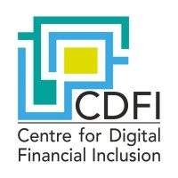

About Me
Driven by the challenges at the intersection of NLP, Large Language Models, and Responsible AI, I am currently pursuing my Master's in Data Science at Texas A&M while contributing to research at the FLAIR Lab. My focus is on practical advancements in LLMs: I've developed techniques for efficient RLHF, created a novel approach to multi-preference alignment submitted to COLM 2025, and engineered an algorithm for unlearning sensitive content that secured 2nd place at SemEval-2025. My technical toolkit includes deep experience with Transformers, PyTorch, RL frameworks (PPO, DPO), and distributed training across multi-GPU/multi-node HPC clusters using Deepspeed and Slurm. This research experience is built on a solid foundation of software engineering, including developing scalable AutoML platforms and microservices using Python, Docker, and Kafka. I am eager to apply my skills in research and development to challenging MLE, Applied Scientist, or AI-focused SWE positions.
Technical Skills
Languages: Python, SQL, C++, Unix/Shell Scripting.
AI/ML Libraries & Frameworks: PyTorch, Transformers (Hugging Face), DeepSpeed, TensorFlow / Keras, Scikit-Learn, OpenAI Gymnasium, Numpy, Pandas, OpenCV, NLTK.
Tools, Platforms & DevOps: Cloud & HPC (AWS, Slurm), Distributed Systems & MLOps (Kafka, Docker, Kubernetes, Jenkins), Databases (PostgreSQL, MongoDB, Elasticsearch), Web Frameworks & API (Flask, FastAPI), Version Control (Git), Data Visualization (Matplotlib, Plotly), Other (Dask, PyQT, OpenMP).
Education
Texas A&M University, College Station, TX 08/2023 - 05/2025
Master of Science in Data Science GPA: 3.7
- Research Assistant, FLAIR Lab. Spring 2024 - Present.
- Teaching Assistant, Dept. of Statistics. Fall 2024.
Manipal Institute of Technology, Manipal, India 07/2017 - 05/2021
Bachelor of Technology in Control Systems Engineering
Professional Experience
Software Developer, ML Team - Viewzen Labs Pvt. Ltd., Bangalore, India 07/2021 - 07/2023
- Conceptualized and spearheaded the development of a novel AutoML platform (MLaaS) for supervised learning, orchestrating microservices via REST APIs and Kafka Streams.
- Developed core Python library using Hyperopt and Scikit-Learn, reducing pre-processing, model development, and evaluation time by 80%.
- Engineered multiple RESTful Python microservices using FastAPI, containerized with Docker, processing data ingested via asynchronous Kafka consumers, utilizing multiprocessing for high volume requests.
- Enhanced a big data transformation microservice for an ETL (SaaS) product by leveraging Cython and NumPy, improving CPU utilization and increasing processing speeds by 20% over the previous Node.js build.
- Led a large-scale predictive modeling initiative for pregnancy complications (45,000+ women, 300+ features), encompassing data processing, analysis, and modeling, culminating in a medical desktop application.

Machine Learning Engineer Intern - Centre for Digital Financial Inclusion, New Delhi, India 02/2021 - 06/2021
- Developed Speech-to-Text capabilities, transforming raw audio to MFCC components using custom TensorFlow layers.
- Implemented and evaluated RNN, GRU, and LSTM architectures for character, word, and phoneme-level prediction.
- Fine-tuned the DeepSpeech model via transfer learning on an Indian Accent dataset, achieving 0.10 CER and 0.17 WER using a context-aware KenLM language model.
- Integrated a T5 Transformer model to generate SQL queries from natural language, showcasing broader NLP application skills.